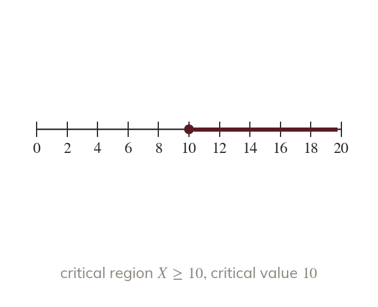
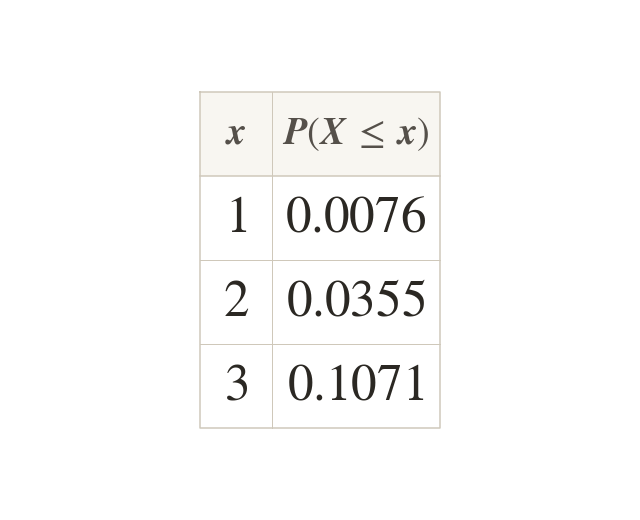
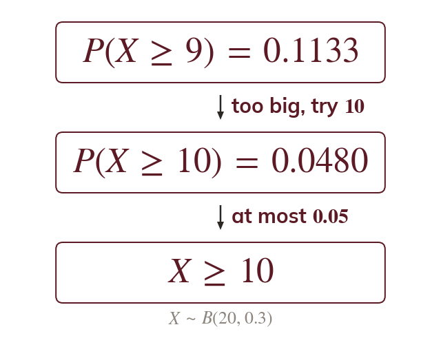
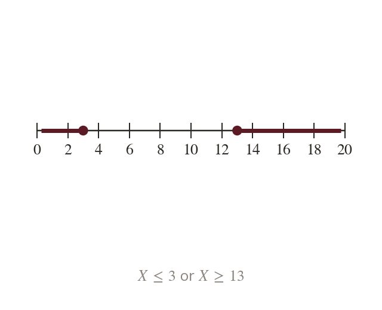
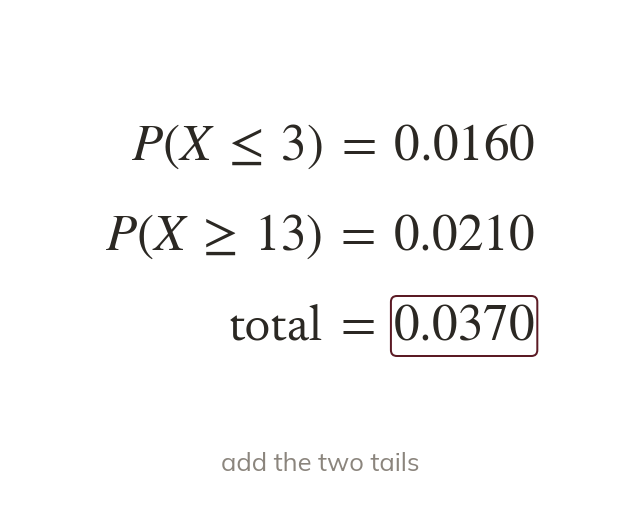
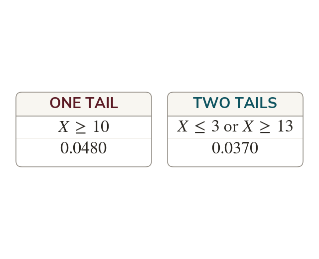

The critical region
The critical region is the set of values that would lead to rejecting
The critical value is the first value in it, and every other value is in the acceptance region.
A critical region lets a tester decide, before the data are collected, which results will reject
The regions and actual significance levels found here are used to carry out one-tailed and two-tailed tests in the next two lessons.
Work down the page at your own pace. Write every answer in your book first, then click to check it.
Read each card, then follow the worked examples one step at a time.

The critical region is the set of values that would lead to rejecting
The critical value is the first value in it, and every other value is in the acceptance region.

For : find the largest with at most
Here and so the critical region is

For : find the smallest with at most
Use
Pick an answer. If it's wrong, the feedback tells you which mistake it was.
Write the blanks in your book first, then tap each one to check.
Read each card, then follow the worked examples one step at a time.

For : half the significance level goes in each tail. At each tail has probability at most

The actual significance level is the probability of landing in the critical region when is true. It is the probability of rejecting when is right.

X takes whole numbers, so the actual significance level is usually below the significance level. For a one-tailed test it is the probability of its one tail.
Pick an answer. If it's wrong, the feedback tells you which mistake it was.
Write the blanks in your book first, then tap each one to check.
For each skill, tap the one that is true for you today. Your Revise pages start with anything you mark Not yet.
Your ratings are saved on this device only.
Log in, then search for a code to practise that skill.